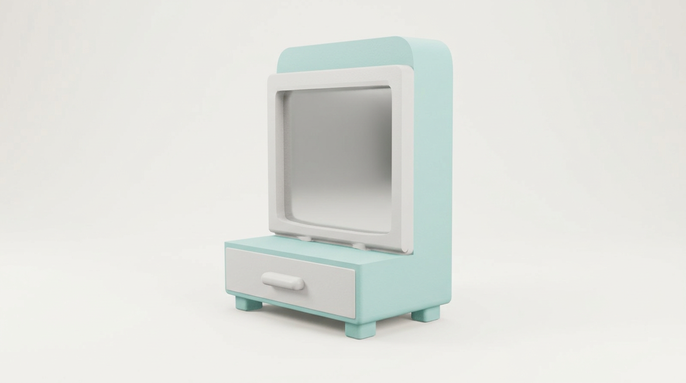
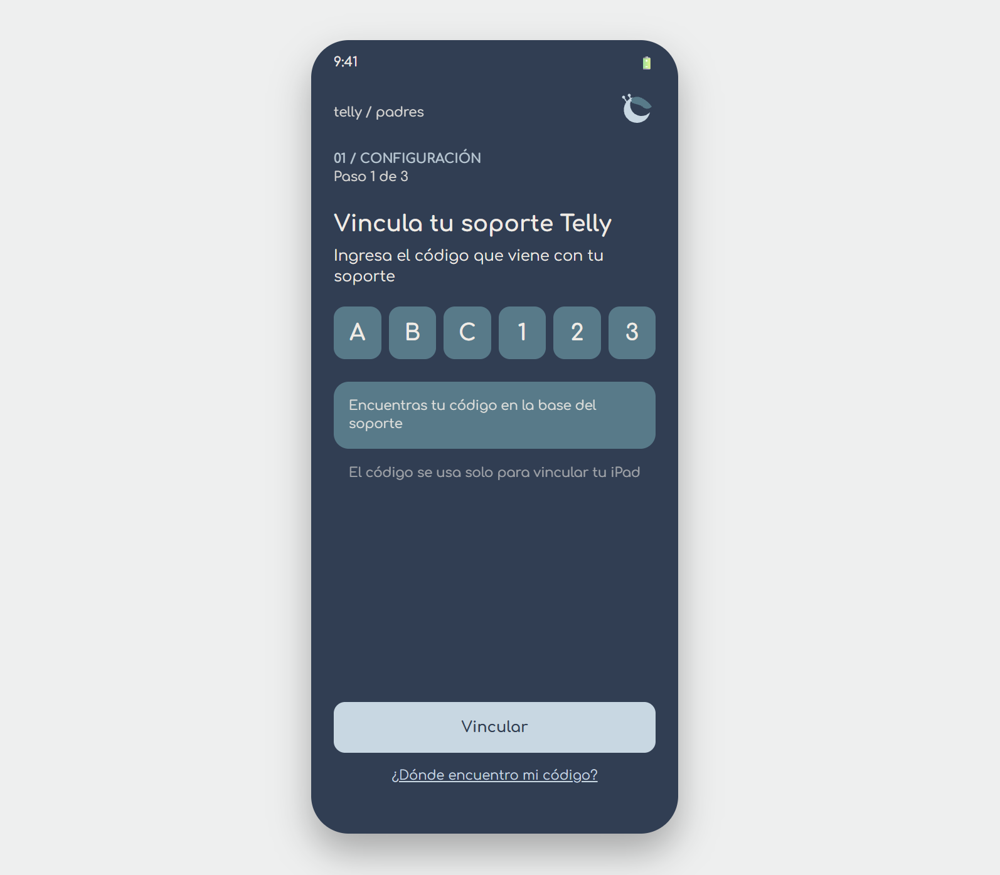

¿Cómo funciona Telly?

1. La Base Física
Tu iPad se desliza de forma segura en un soporte impreso en 3D que transforma el dispositivo en un adorable compañero, dándole a la tablet un "hogar" a la hora de dormir.

2. La App del Niño
La interfaz animada guía al niño a través de su rutina. A la hora programada, la pantalla 'se duerme' gradualmente, pasando a tonos cálidos hasta apagarse con suavidad.

3. Control Parental
Desde tu propio teléfono, configuras los horarios de sueño y la duración de la rutina de forma invisible, evitando bloqueos sorpresa y las temidas rabietas.